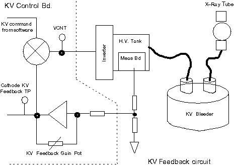
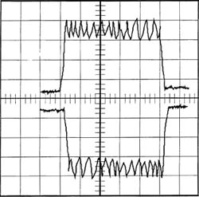
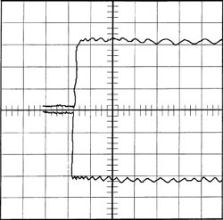
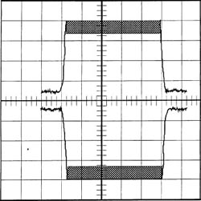

Proprietary to General Electric
Direction 5114043-800, Rev# 9
LightSpeed 3.X Service Methods (Advanced)
Proprietary to General Electric |
This module contains the following sections:
Section 1 - Reported vs. Actual Tube kV
Section 2 - kV Gain Pot Adjustment
Section 3 - SW & HW Tools Available for Troubleshooting
Section 4 - Explanation of kV/mA Results Screen
Section 5 - Tube Spit Explanation
Section 6 - Bleeder Ripple/Oscilloscope Aliasing
Section 7 - kV Reference Material
The kV (and mA) reported to the software, which includes the reported kV to the console, does not have to be what is actually across the x-ray tube. The kV reported to the software does not have to be what is seen by the bleeder.
Reported kV comes from the Anode and Cathode kV Test points on the kV Control Bd. Because of kV closed loop regulation, this test point (on a normally operating scanner) should never be different from “SELECTED VALUE” (± 2.999%). This is the node that the loop uses to regulate. Because the gain of the electronic monitoring devices between the x-ray tube and this test point may not be 1, the kV reported here IS NOT THE ACTUAL kV SEEN ACROSS THE X-RAY TUBE. It is what the system THINKS is the actual tube voltage. The purpose of kV gain adjustment is to get a gain of one between x-ray tube and TP10.
| NOTE: | It is uncommon, but possible to get the kV gain pots out of adjustment as much as ± 15kV. |
The purpose of the kV Feedback Gain Pot is to ensure a gain of one in the feedback circuit. A gain of one will ensure that the voltage across the x-ray tube (and bleeder) is what gets reported to the kV Feedback Test Point. The closed loop regulates to these test points, if these test points are wrong the system will change inverter current to compensate for the wrong kV.
Improperly adjusted kV Gain Pots can result in the kV being off as much as ±30kV total from what the system (software) thinks is across the tube. This means that the system is cooling for 120kV, and actual kV across the tube can be as high as 150kV. Tube life would be very low with this scenario.
Illustration 1: Why Reported kV may not be the Actual kV Across the Tube

EXAMPLE: kV Feedback Gain Pot is adjusted for a gain of.90. A kV command of 100 kV is received (50kV anode, 50kV cathode). With 50kV across kV Bleeder (as read with the scope), and a gain of 0.90 the kV Test Point will only see 45kV. The error mux will command a higher inverter current until kV Test Point is 50kV. HOWEVER the kV across the bleeder (x-ray tube) is really 55.5kV.
Tweaking the kV Gain Pot for a gain closer to one will cause the error mux to reduce the inverter current, therefore compensating for the kV Test Point. The kV Gain Pots are adjusted correctly when the kV across the bleeder is the same as the kV Test Points.
To reinforce that the kV feedback test points DO NOT reflect actual kV across the tube. The purpose of the kV gain pot is to ensure that there is a gain of 1 (one) between the tube kV measurement (meas bd) and tube kV reporting (kV test points.)
The reason that kV test points (on a normally operating system) will never be different than commanded, is that this is the node the closed loop uses to regulate the kV. If this test point is wrong the system will change inverter current to compensate. It takes milliseconds to do this, therefore it looks like these test points never change.
Another reason for this documentation is to emphasize how far off the kV gain pots can be adjusted and the system still think that the kV across the tube is what the cooling algorithm thinks it is.
Definitions for columns labelled in Table 1:
Turns cw - The kV gain pot was turned fully ccw, then turned clockwise one turn at a time.
Bleeder - kV bleeder installed in system. This is actual kV across the tube.
Kvan and Kvca - anode and cathode test points on the kV control board.
| NOTE: | One turn cw (from fully ccw) will bring the gain closer to one, resulting in the bleeder voltage come up closer to the test point. This is true up until 15 turns when the gain is less than one. Now the actual kV across the tube is GREATER THAN the test points (measurement gain less than one). |
A properly adjusted kV gain pot should be in the neighborhood of about 15 turns.
Example:
kV FEEDBACK POT Values
Table 1: Typical kV Feedback Pot Values
| ANODE | CATHODE | ||||
|---|---|---|---|---|---|
| FULLY CCW (starting pt) | FULLY CCW (starting pt) | ||||
| TURNS CW | BLEEDER | KVAN | TURNS CW | BLEEDER | KVCA |
| 2 | 44.854 | 5.9823 | 2 | 45.036 | 6.0004 |
| 3 | 45.751 | 5.9095 | 3 | 45.438 | 6.0192 |
| 4 | 47.008 | 5.9711 | 4 | 46.473 | 6.0306 |
| 5 | 48.266 | 5.9639 | 5 | 47.47 | 6.0232 |
| 6 | 49.543 | 5.9631 | 6 | 48.576 | 6.0274 |
| 7 | 50.614 | 5.9601 | 7 | 49.731 | 6.0244 |
| 8 | 51.613 | 5.9493 | 8 | 50.84 | 6.0235 |
| 9 | 52.615 | 5.9554 | 9 | 51.835 | 6.0238 |
| 10 | 53.705 | 5.9445 | 10 | 52.749 | 6.0327 |
| 11 | 54.883 | 5.9449 | 11 | 54.065 | 6.0235 |
| 12 | 56.103 | 5.9442 | 12 | 55.337 | 6.0241 |
| 13 | 57.32 | 5.9361 | 13 | 56.49 | 6.0225 |
| 14 | 58.315 | 5.9324 | 14 | 57.861 | 6.0207 |
| 15 | 59.532 | 5.931 | 15 | 58.917 | 6.0309 |
| 16 | 60.527 | 5.9238 | 16 | 60.06 | 6.0192 |
| 17 | 60.763 | 5.9081 | 17 | 61.354 | 6.0263 |
| 18 | 62.041 | 5.9359 | 18 | 62.695 | 6.0324 |
| 19 | 63.041 | 5.9328 | 19 | 63.68 | 6.0213 |
| 20 | 64.108 | 5.9361 | 20 | 65.114 | 6.0253 |
| 21 | 65.136 | 5.9479 | 21 | 66.429 | 6.0213 |
| 22 | 66.118 | 5.955 | 22 | 67.334 | 6.0327 |
| 23 | 67.122 | 5.9636 | 23 | 68.731 | 6.0293 |
| 24 | 68.134 | 5.9706 | 24 | 69.827 | 6.0303 |
| 25 | 69.164 | 5.986 | 25 | 70.917 | 6.0238 |
| 26 | 70.081 | 5.9981 | 26 | 71.974 | 6.0275 |
| 27 | 71.157 | 5.9385 | 27 | 73.147 | 6.0297 |
| 28 | 72.092 | 5.9854 | 28 | 74.256 | 6.0235 |
| 29 | 73.171 | 5.9808 | 29 | 74.961 | 6.0241 |
| 30 | 74.155 | 5.9801 | 30 | 75.041 | 6.0244 |
kV & mA (X-Ray) Results Screen on the Troubleshoot menu is the **Primary tool for kV related problems other than Overcurrents or Shoot-thrus. Overcurrents or Shoot-thrus will terminate scans, resulting in no data collection also OBC BLDs
kV Control Bd. (Newer Style Bd.) Schematics 2143147SCH
kV Inverter Gate Driver Bd. Schematics 46-264662-S
kV Inverter Capacitor Bd. and Schematics 46-264664-S
OBC Backplane list
Gantry Rotating Member Block Diagram
Gantry_Rotating_Interconnect
X-Ray Tube 120 VAC
Bleeder
Bleeder/O’Scope combination can cause aliasing with the bleeder kV signal, resulting in kV ripple as high as 20kV.
Multi-meter
Oscilloscope
This is an example of a results screen from a 120kV, 200mA, 10 second scan. (This example is from a “newer style”-i.e., 46-321198-kV Control board, with 550vdc DCRGS.)
Table 2: kV/mA Results Screen - 46-321198 kV Control bd.
| HIGH VOLTAGE STATUS | ||||
|---|---|---|---|---|
| NO. | DEVICE | AVERAGE VALUE | SELECTED VALUE | LAST SAMPLE |
| 1. | Total kV: | 119.4 kV | 120.0 kV | 119.4 kV |
| 2. | Cathode kV: | 59.7 kV | 60.0 kV | 59.7 kV |
| 3. | Anode kV: | 60.1 kV | 60.0 kV | 60.1 kV |
| 4. | Cathode mA: | 193.7 mA | 200 mA | 193.7 mA |
| 5. | Anode mA: | 193.7 mA | 200 mA | 193.7 mA |
| 6. | Cathode inverter current: | 30.7 A | - | 30.7 A |
| 7. | Anode inverter current: | 30.7 A | - | 30.7 A |
| 8. | Approx. kV inverter frequency(VCNT): | ( 1.6V) | xx.x KHz | |
| 9. | Cathode inverter duty cycle: | 100% | - | 100% |
| 10. | Anode inverter duty cycle: | 83% | - | 83% |
| 11. | Rail voltage: | 540 V | 550 V | 540 V |
| 12. | Exposure duration: | - | 10000 mS | 10001 mA |
| 13. | Exposure number: | - | 1 | 1 |
Definitions of Column Headings:
AVERAGE VALUE: The average taken over the duration of the scan (see Exposure Duration).
SELECTED VALUE: The value prescribed by the user, or the value required to perform the scan.
LAST SAMPLE: The last value read during an ACTIVE exposure.
| 1. Total kV Explanation: | 119.4kV | 120.0kV | 119.4kV |
On the 46-321198G1-F board this signal comes from TP11. It is an op-amp sum of Anode kV (TP9) and Cathode kV (TP10). Because of kV closed loop regulation, this test point (on a normally operating scanner) should never be different from “SELECTED VALUE” (± 2.999%). DO NOT TROUBLESHOOT “Total kV” low (or high). Instead troubleshoot either the anode or the cathode being low (or high), they are the inputs to this value.
“Total kV” gets reported to the software through the Gentry I/O and OBC Backplane.
| 2. Cathode kV Explanation: | 59.7kV | 60.0kV | 59.7kV |
On the 46-321198G1-F board this signal comes from TP10. Because of kV closed loop regulation, this test point (on a normally operating scanner) should never be different from “SELECTED VALUE” (± 2.999%). This is the node that the loop uses to regulate. Because the gain of the electronic monitoring devices between the x-ray tube and this test point may not be 1, the kV reported here IS NOT THE ACTUAL kV SEEN ACROSS THE X-RAY TUBE. It is what the system THINKS is the actual tube voltage. The purpose of kV gain adjustment is to get a gain of one between x-ray tube and TP10.
| NOTE: | It is uncommon, but possible to get the kV gain pots out of adjustment
as much as ± 15kV. Inverter current is commanded by (VCNT). Compare these three readings (cathode kV, Cathode inverter current and (VCNT)) and troubleshoot. Nominal values are attached. |
| 3. Anode kV Explanation | 60.1kV | 60.0kV | 60.1kV |
On the 46-321198G1-F board this signal comes from TP9. Because of kV closed loop regulation, this test point (on a normally operating scanner) should never be different from “SELECTED VALUE” (± 2.999%). This is the node that the loop uses to regulate. Because the gain of the electronic monitoring devices between the x-ray tube and this test point may not be 1, the kV reported here IS NOT THE ACTUAL kV SEEN ACROSS THE X-RAY TUBE. It is what the system THINKS is the actual tube voltage. The purpose of kV gain adjustment is to get a gain of one between x-ray tube and TP9.
| NOTE: | It is uncommon, but possible to get the kV gain pots out of adjustment
as much as ± 15kV. Inverter current is commanded by (VCNT). Compare these three readings (Anode kV, Anode inverter current and (VCNT)) and troubleshoot. Nominal values are attached. |
| 4. Cathode mA Explanation: | 193.7mA | 200.0mA | 193.7mA |
This value comes from the mA Control Bd. 2154834 TP4, through the backplane and Gentry I/O bd. Since the cathode is in series with the anode, TP4 should be the same value as the anode mA. The scale is 1v/100mA.
In closed loop mode TP4 should be commanded mA. In open loop mode the value should be less (whatever is in GenCalSeed). TP4 is actually the cathode high voltage tank secondary amperage, the x-ray tube is the load for the secondary. mA Meter Verification verifies that the measurement electronics have a gain of one and that reported mA is actual mA.
Cathode high voltage tank secondary amperage (and x-ray tube mA) is the direct result of filament heating, for improper mA include filament function while troubleshooting. If mA is out of tolerance (3%), check kV values for large errors, verify mA metering, and run the Filament Functional test. BLDs can help also.
If cathode and anode mA are different, suspect mA measurement electronics (use mA Meter Test), or suspect a shattered x-ray tube insert shorting out the filament (cathode) or the anode.
| 5. Anode mA Explanation | 193.7mA | 200.0mA | 193.7mA |
This value comes from the mA Control Bd. 2154834 TP10, through the backplane and Gentry I/O bd. Since the anode is in series with the cathode, TP10 should be the same value as the cathode mA. The scale is 1v/100mA.
In closed loop mode TP10 should be commanded mA. In open loop mode the value should be less (whatever is in GenCalSeed). TP10 is actually the anode high voltage tank secondary amperage, the x-ray tube is the load for the secondary. mA Meter Verification verifies that the measurement electronics have a gain of one and that reported mA is actual mA.
Anode high voltage tank secondary amperage (and x-ray tube mA) is the direct result of filament heating, for improper mA include filament function while troubleshooting. If mA is out of tolerance (3%), check kV values for large errors, verify mA metering, and run the Filament Functional test. BLDs can help also.
| 6. Cathode Inverter Current Explanation: | 30.7A | - | 30.7A |
This value comes from the kV Control Bd. 46-321198G1-F TP21, through the backplane and Gentry I/O bd. The scaling is 25A/volt. Values over 8 amps will result in an overcurrent error. Refer to Direction 2243318 Function Interconnect Drawings, kV LOOP FUNCTIONAL INTERCONNECT. Locate the “OVERCURRENT” toroid/transformer. This toroid monitors the current leaving the inverter and going to the tank primary.
| 7. Anode Inverter Current Explanation: | 30.7A | - | 30.7A |
This value comes from the kV Control Bd. 46-321198G1-F TP20, through the backplane and Gentry I/O bd. The scaling is 25A/volt. Values over 8 amps will result in an overcurrent error. Refer to Direction 2243318 Function Interconnect Drawings, kV LOOP FUNCTIONAL INTERCONNECT. Locate the “OVERCURRENT” toroid/transformer. This toroid monitors the current leaving the inverter and going to the tank primary.
| 8. Approx. kV Inverter Frequency (VCNT) Explanation: | ( 1.60V) | xx.xKHz |
This value comes from the kV Control Bd. 46-321198G1-F TP24, through the backplane and Gentry I/O bd. This is the input voltage to the voltage controlled oscillator. the operating range is from 0-5v, which will give a frequency range of 19.5khz to 31.5khz.
A (VCNT) of 0.2v is a command for a lower frequency, a lower frequency will allow more current through the primary resulting in more kV output. To summarize, a (VCNT) 0f 0.2v is max current command, should have max inverter current, should have max kV.
A (VCNT) of 5v (or more) is a command for a higher frequency, a higher frequency will allow less current through the primary resulting in less kV output. To summarize, a (VCNT) 0f 4.99v is min current command, should have min inverter current, should have min kV.
(VCNT) is an composite signal generated from the difference between kV command and kV feedback. This error signal is also an input into (VCNT).
Compare these three readings (cathode kV, Cathode inverter current and (VCNT)) and troubleshoot. Nominal values are attached.
| 9. Cathode Inverter Duty Cycle Explanation: | 100% | - | 100% |
This value comes from the kV Control Bd. 46-321198G1-F TP23, through the backplane and Gentry I/O bd. The system uses duty cycle to regulate at the lower mAs more than it uses frequency. At the higher mAs the system uses frequency to regulate more than it uses duty cycle. Compare the cathode duty cycle to the anode duty cycle.
| 10. Anode Inverter Duty Cycle Explanation: | 83% | - | 83% |
This value comes from the kV Control Bd. 46-321198G1-F TP22, through the backplane and Gentry I/O bd. The system uses duty cycle to regulate at the lower mAs more than it uses frequency. At the higher mAs the system uses frequency to regulate more than it uses duty cycle. Compare the cathode duty cycle to the anode duty cycle.
| NOTE: | The following statement is only true for the older KV board 46-321064G1 and inverters tuned to 19.1 Khz and 18.6 Khz. The anode duty cycle should never reach 100% and rarely gets past 95%. At 95% and at a max (VCNT) command, the system is out of energy, therefore you should only see these percentages at 140kv, 340ma. When the system is out of energy, the kv will start caving in. Also at mAs higher than 100ma, the anode duty cycle should never exceed the cathode duty cycle. |
IF THIS SCENARIO HAPPENS, the system is running out of energy. Most likely due to an IGBT not firing.
FOR KV BOARDS OTHER THAN 46-321064G1: The duty cycle can achieve 100% on either the cathode or anode inverter. This should be considered normal operation for the new inverters.
| Exposure Duration, Number, and Status Register Explanation: | |||
| Exposure duration: | - | 10000mS | 10001mS |
| Exposure number: | - | 1 | 1 |
| Status register (Address = FFCFF9H): | - | 8FH | |
When a fast fall time is detected on the kV waveshape.
Tubes spit all of the time. A pessimist might even say that if a tube doesn’t spit, there is something wrong with it. The question is, “When do we stop scanning because of tube spits?” The answer is, “when spits affect image quality or could cause equipment damage.”
The kV Control Board monitors the kV via the kV feedback test points. A tube spit causes the kV drop at an extremely fast rate. An integrator circuit on the kV Control Board monitors the kV feedback, whenever this integrator detects this fast fall time (an integrator has little impedance to fast frequencies), it is considered a tube spit. The kV Control Board then turns off x-rays for approximately 100ms to allow the x-ray tube to recover.
The answer is image quality.
It has been determined that more than 32 spits per scan second may affect image quality, therefore the system will stop scanning when the system has counted more than 32 spits per scan second.
On the older style kV Control Board (46-321064), scanning will abort when 32 spits occur in a rolling 1 second window, for a net rate of 27.1 to 40.7 spits/sec.
On the newer style kV Control Board (2143147), scanning will abort when 9 spits occur in a rolling 0.26 second window for a net rate of 34.3 spits/sec.
Overcurrents and Shoot-Thrus protect the system against damage. Spit detection is not used to protect the system against damage.
The current bleeder in use today was designed for line frequency type generators and has a band width of 720hz. The high voltage subsystem operates at approximately 19.khz to 31khz. The problem is, if you connect a scope probe directly to the bleeder, it has a tendency to amplify high frequency ripple. The bleeder requires the cable capacitance to roll off the high end properly. Also, there are actually a couple different bleeders out there under the same model #. They were never intended to deal with signals above 720 Hz (for line frequency machines). As a result the high frequency response is unreliable.
This is not to say avoid using the present bleeder for measuring high voltage. The Bleeder is what GEMS uses for measuring high volt. However, when using the bleeder, it is extremely difficult to determine what is real ripple and what is aliasing.
Refer to the waveshapes in Section 7 for examples of normal bleeder waveshapes.
Illustration 2: kV Ripple @ 0.2 second scope trace

A:20V=0.2S B:20V=0.2S
140KV 340ma Bleeder (slow sweep)
This is a normal picture.
This is a good example of the scope aliasing the inverter ripple. NOTE: that the ripple can be as high as 20kV per side. Although aliasing will indicate something at higher frequencies, it is not a true waveform.
Illustration 3: kV Ripple @ 0.1 second scope trace

A:20V=0.1S B:20V=0.1S
140KV 340ma Bleeder (slow sweep)
This is a normal picture.
This is a good example of the scope aliasing the inverter ripple. This picture is the same picture as is in the previous section, the only difference is the scope time base. NOTE: that the ripple can be as high as 20kV per side. Although aliasing will indicate some thing at higher frequencies, it is not a true waveform.
Illustration 4: kV Ripple @ 0.2 sec. scope trace w/scope in “peak or “envelope” mode

A:20V=0.2S B:20V=0.2S
140KV 340ma Bleeder (slow sweep)
This is a normal picture, w/scope in “peak” or “envelope” mode.
This is a good example of the scope aliasing the inverter ripple. Note that the ripple can be as high as 20kV per side. Although aliasing will indicate something at higher frequencies, it is not a true waveform.
RESULTS SCREEN VALUES FOR:
kV Control Bd. (2143147)
with a Compact PDU (unregulated HVDC)
with a PERFORMIX tube
at Nominal Line Voltage